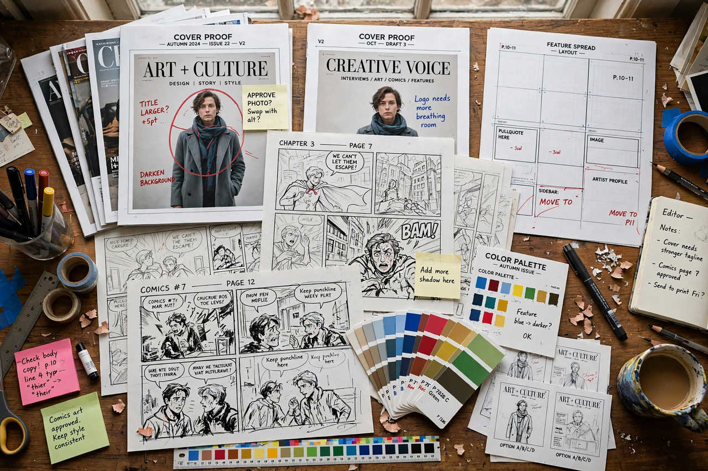

| Born | October 24, 1955, Paris, France |
|---|---|
| Nationality | French-American |
| Occupation | Art editor, designer, publisher |
| Known for | Raw magazine; art editor of The New Yorker; TOON Books |
| Spouse | Art Spiegelman |
Françoise Mouly (born October 24, 1955) is a French-born American designer, editor, and publisher. She is best known as the co-founder, with her husband Art Spiegelman, of the avant-garde comics anthology Raw (1980–1991), as the art editor of The New Yorker since 1993, and as the founder of TOON Books, a children's comics publishing house.
Mouly was born in Paris and studied architecture at the École nationale supérieure des Beaux-Arts. She arrived in New York in 1974, working various jobs while becoming immersed in the city's underground film and comics scenes. After meeting cartoonist Art Spiegelman, whom she married in 1977, the two began publishing Raw from their SoHo loft in 1980.
Raw was a lavishly produced large-format magazine that treated comics as a serious art form, publishing work by Spiegelman (including the serialized Maus), Charles Burns, Gary Panter, Joost Swarte, and many European and Japanese artists. Mouly's production standards — she trained as a printer and colourist, notably colouring Maus — helped redefine what comics publishing could look like.
Hired by editor Tina Brown in 1993, Mouly has overseen more than a thousand covers of The New Yorker, commissioning artists including Barry Blitt, Anita Kunz, and Chris Ware. Her tenure is credited with returning the cover to cultural prominence as a form of visual editorial commentary.
In 2008 Mouly founded TOON Books, publishing hardcover early-reader comics by artists such as Eleanor Davis, Jeff Smith, and Nadja Spiegelman, her daughter. The line won numerous awards and argued the case for comics as a tool for children's literacy.